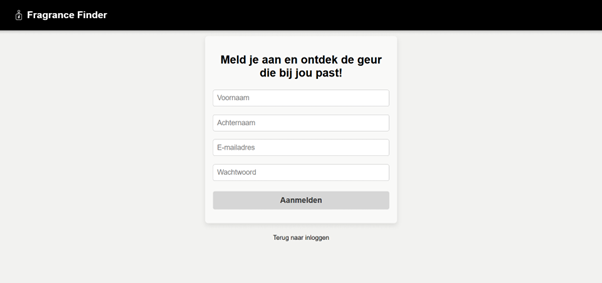
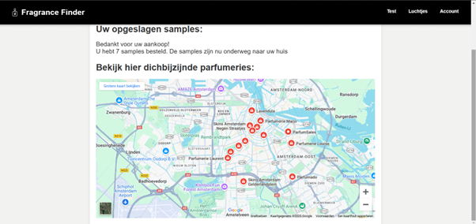
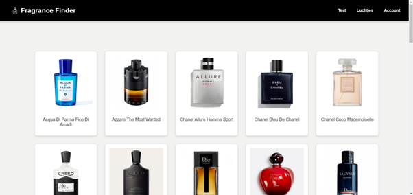
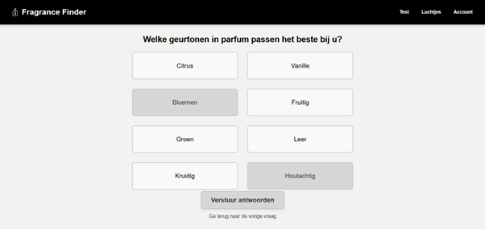

Fragrance Finder is een SaaS-applicatie die we als groep hebben ontwikkeld voor het Dragons Den-event van de HvA, waarbij echte ondernemers kwamen luisteren naar de pitches van studenten. Het idee: mensen vinden het moeilijk om een parfum te kiezen zonder het te ruiken. Onze app stelt een paar gerichte vragen en doet op basis daarvan een passende aanbeveling. Vanuit de app kon je direct doorklikken naar webshops zoals de Bijenkorf — inclusief kortingen of de mogelijkheid om een tester te bestellen. Op een kaart was ook te zien waar het parfum fysiek te koop was.
- De database ontworpen en opgezet met SQL voor het opslaan van parfumdata en gebruikersvoorkeuren.
- De backend gebouwd in Python — inclusief de aanbevelingslogica op basis van gebruikersinvoer.
- De frontend uitgewerkt in HTML en CSS, van de vragenlijst tot de resultatenpagina met kaart.
- Gebruikerstesten uitgevoerd om te kijken of de flow klopte en waar mensen vastliepen.
- Marktonderzoek gedaan naar de parfumbranche om ons businessmodel te onderbouwen.
- Meegeschreven aan het businessplan en deelgenomen aan de pitch voor de ondernemers.






We hebben een volledig werkende demo opgeleverd en de finale gehaald van het Dragons Den-event. Het project liet zien dat we techniek en ondernemerschap konden combineren. Van een werkende SaaS-applicatie tot een onderbouwd businessmodel met affiliate marketing en testerverkoop als inkomstenbronnen.